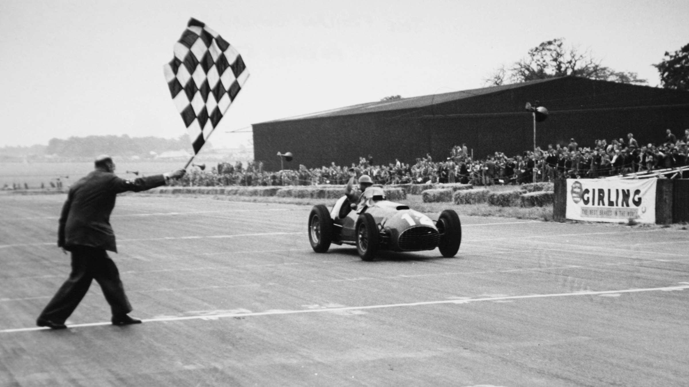
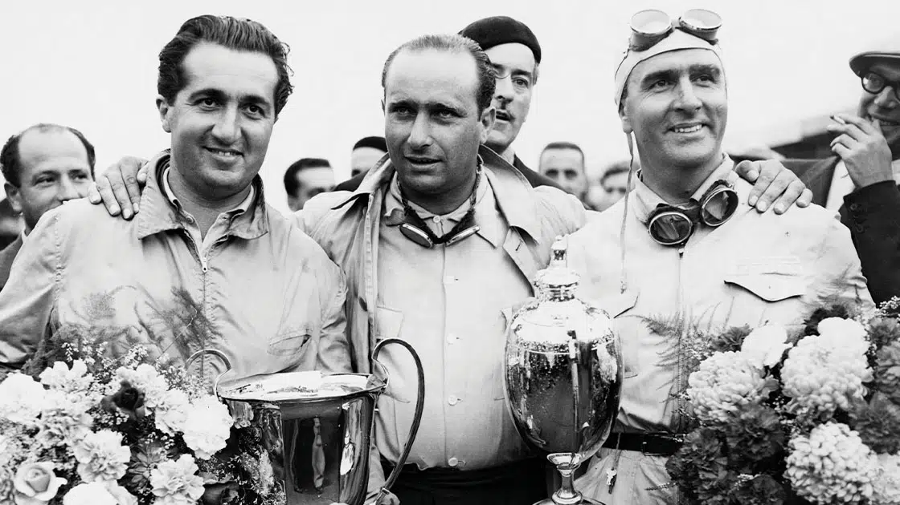
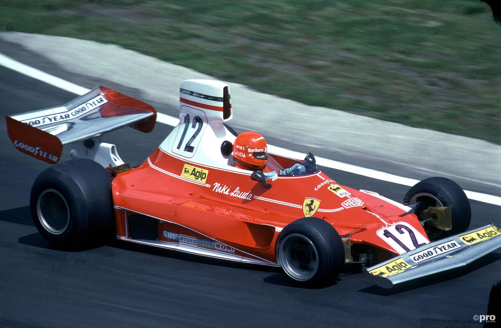
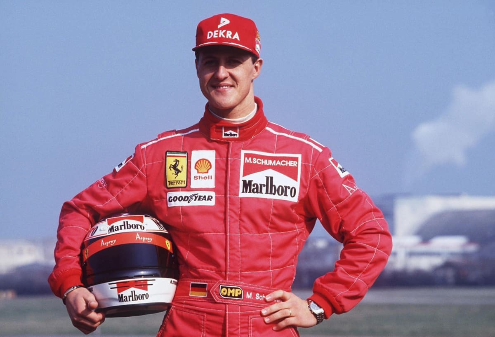
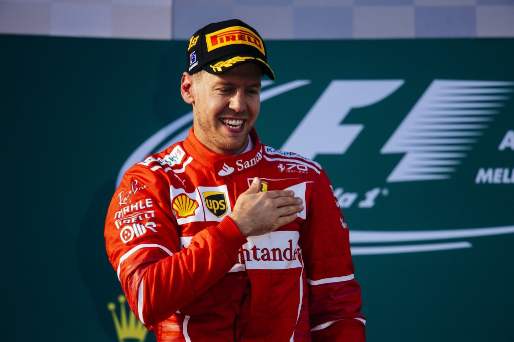

HISTORIA DE FERRARI EN FORMULA 1
Es difícil imaginar la historia de la Fórmula 1 sin Ferrari y la historia de Ferrari sin la Fórmula 1. De hecho, la Scuderia es el único equipo que compitió en todas las temporadas desde su inauguración en 1950.Pero este era solo el comienzo de su historia en este deporte...
El nacimiento de la Scuderia Ferrari se remonta a 1929, mucho antes de la aparición de la Formula 1, y fue creada por Enzo Ferrari como el ala de carreras de Alfa Romeo. Después de la Segunda Guerra Mundial, como responsable de los autos de fábrica, Enzo Ferrari se mudó de Módena a Maranello y se convirtió en fabricante justo a tiempo para ingresar en la temporada inaugural del nuevo Campeonato Mundial creado por la FIA. El equipo hizo su debut en la Fórmula 1 en la segunda carrera de 1950 y su primera victoria llegaría tan sólo un año después, de la mano del Argentino José Froilán González en el Gran Premio de Gran Bretaña de 1951 en la famosa pista que una día sería, Silverstone.
Tras dos años de dominio por parte de Alfa Romeo, Ferrari consiguió sus dos primeros campeonatos consecutivos de la mano de Alberto Ascari, primero en 1952 y luego en 1953, pero el equipo no pudo mantener el ritmo cuando se introdujeron nuevas reglas al año siguiente. Recién en 1956, de la mano de la feroz competitividad de Juan Manuel Fangio, la escudería italiana consiguió el título con un Lancia-Ferrari D50. Dos años después, fue Mike Hawthorn quien se convirtió en el primer campeón del mundo oriundo de Gran Bretaña con un Dino 246 con motor V6, auto que llevaba el nombre del hijo de Enzo Ferrari.
La Fórmula 1 no introdujo el campeonato de constructores hasta 1958, cuando el fabricante británico Vanwall venció a Ferrari para llevarse la victoria en la temporada inaugural. En 1961, Ferrari se vio obligado a seguir el ejemplo de Cooper e introducir el Dino 156 con motor trasero, el famoso “nariz de tiburón” que le dio el título de ese año a Phil Hill. Aquel doble triunfo, en el campeonato de pilotos y en el de constructores, sería el primero de 16 campeonatos de constructores junto con un total de 15 títulos de pilotos en más de mil Grandes Premios consecutivos. Pero no siempre Ferrari supo mantener el primer lugar: luego de que John Surtees ganara el Campeonato Mundial en la carrera final de 1964, pasó más de una década antes de que el equipo volviera a ganar un título. Finalmente, la llegada de Luca di Montezemolo como director de equipo y Niki Lauda como piloto número uno, le devolvió a Ferrari su lugar habitual con tres títulos de constructores consecutivos y dos campeonatos de pilotos. El austríaco ganó los títulos de 1975 y 1977 e incluso podría haber salido victorioso en 1976, de no haber sido por su accidente casi fatal en Nürburgring.
En 1979, Jody Scheckter predomino por encima de Gilles Villeneuve, uno de los favoritos de Enzo Ferrari, en lo que fue un campeonato 1-2 para la Scuderia. A partir de entonces, y pese a haber ganado tres nuevos títulos de constructores en 1982, 1983 y 1999, Ferrari entró en un gran período de sequía antes de volver al éxito en el nuevo milenio. La muerte de Enzo Ferrari en 1988 desestabilizó al equipo, que se vio obligado a reestructurarse e incorporar nuevo personal. Entre ellos, Montezemolo regresó como presidente en 1991, y se dedicó a reestructurar el equipo de Fórmula 1 con Jean Todt a la cabeza. En 1996, llegó Michael Schumacher y un año después, el Director Técnico Ross Brawn desde Benetton. Con grandes nombres a cargo, el nuevo y radical enfoque de Ferrari llevó al equipo a una racha de éxito sin precedentes: junto con Schumacher The Red Baron , lograron cinco campeonatos consecutivos de pilotos y constructores entre el 2000 y 2004.
El “The Red Baron” se retiró a fines de 2006 y el elegido para sucederlo fue Kimi Räikkönen, quien se adueñó del título en un final de temporada de 2007 dramático. A pesar de que Ferrari se llevó el campeonato de constructores un año más tarde, Felipe Massa no pudo contra el McLaren de Lewis Hamilton y desde entonces, Ferrari entró en un nuevo período alejado de las victorias. Pese a los esfuerzos del equipo y el innegable talento al volante de Fernando Alonso, ni la gestión de Maurizio Arrivabene como director de equipo en 2014 ni la posterior llegada de Sebastian Vettel, pudieron darle a Ferrari un nuevo título hasta el momento. Si bien en 2015 el alemán logró conseguir tres victorias, las expectativas se apagaron cuando en 2016 el equipo terminó tercero en el campeonato de constructores sin victorias a su nombre.
Los años que siguieron no hicieron más que otorgarle consistencia y confiabilidad a Mercedes, el equipo que dominó ampliamente la primera etapa de la era híbrida de la Fórmula 1. Ni Ferrari ni ningún otro equipo pudieron hacer nada para detenerlos, hasta el cambio de reglamento en 2022 que terminó por favorecer a Red Bull. Aunque de un tiempo para acá ver a la Scuderia en el podio no sea un suceso habitual, Ferrari y su símbolo del Cavallino Rampante siguen siendo íconos en el mundo de la Fórmula 1 y continúan despertando la pasión de los Tifosi carrera a carrera.